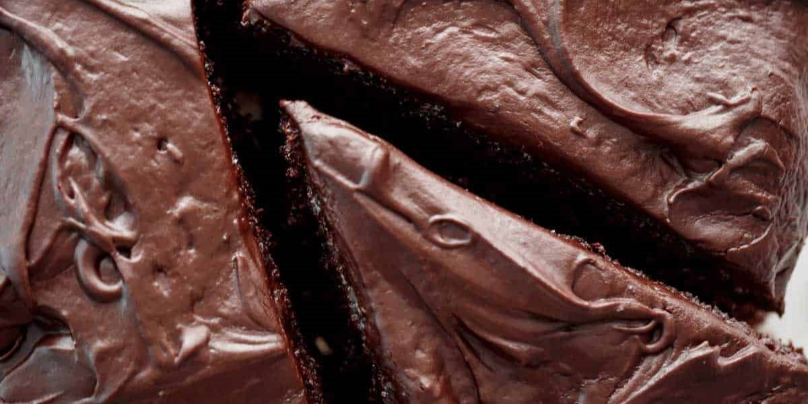

decadent. fudgy. sweet. chocolate cake has got to be the most craved
recipe in the world. (Cafe Delites)
Chocolate cake
- 1 3/4 cups all purpose flour, or (plain flour), (8 oz | 227 g)
- 3/4 cup unsweetened cocoa powder, (2.6 oz | 75 g) or regular Hershey's
cocoa powder
- 1 1/2 teaspoon baking powder
- 1 1/2 teaspoon baking soda, (or bi-carb soda)
- 1 teaspoon salt
- 2 cups white granulated sugar, (14 oz | 410 g)
- 2 large eggs
- 1 cup milk, (250 ml)
- 1/2 cup vegetable oil, (125 ml)
- 2 teaspoons pure vanilla extract
- 1 cup boiling water (250 ml)
Chocolate buttercream frosting
- 4 oz butter, (120 g | 1/2 cup)
- 2/3 cup unsweetened cocoa powder, or regular
HERSHEY'S (2.4 oz | 65 g)
- 3 cups powdered sugar, (confectioners or icing sugar)
- 1/3 cup milk
- 1 teaspoon pure vanilla extract
Chocolate cake
- Preheat oven to 350°F (180°C) standard or 320°F (160°C) fan/convection.
- Lightly grease 2x 9-inch (22cm) round cake pans with butter. Line base
with parchment paper.
- Sift together flour, cocoa, baking powder, baking soda and salt into a large
bowl. Whisk in sugar, then add eggs, milk, oil and vanilla. Whisk well to
combine until lump free, about 30 seconds.
- Pour boiling water into batter, mixing well. Cake batter is thin in consistency.
- Pour batter into cake pans and bake for 30-35 minutes or until a wooden
skewer inserted into the centre comes out clean.
- Let cool for 10 minutes, then turn out onto wire racks to cool completely
before frosting.
Chocolate buttercream frosting
- Melt butter, then whisk in cocoa powder. Alternately add powdered sugar and
milk, beating to spreading consistency (add a small amount of additional milk,
if needed). Stir in vanilla.